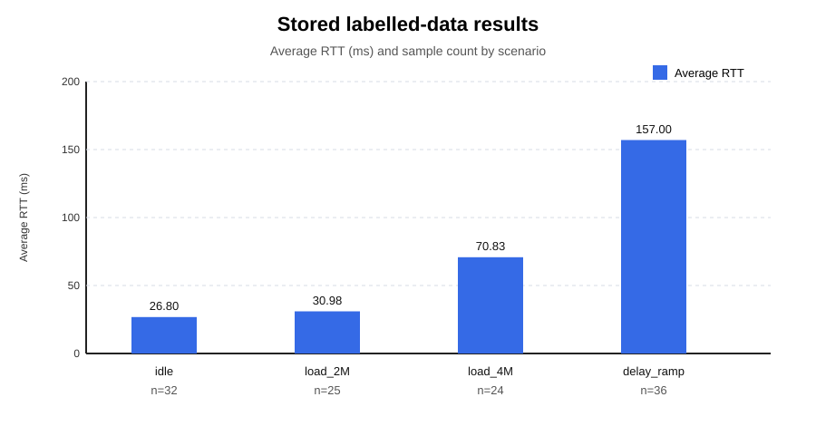
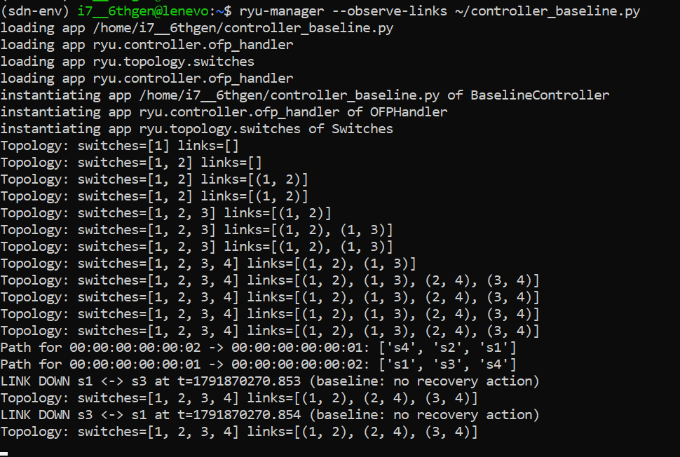
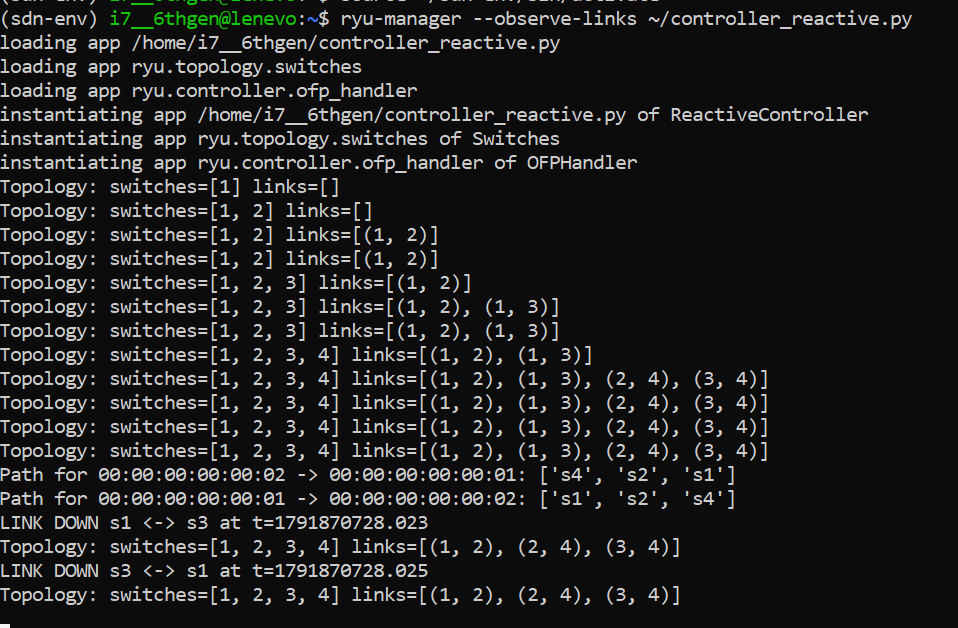
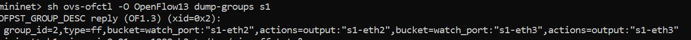
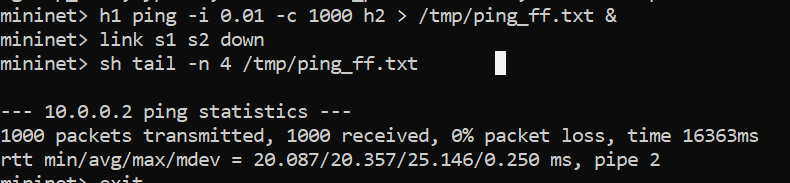

A Multi-Strategy Self-Healing Software-Defined Network with Telemetry, Adaptive Control, and Recovery Evidence
Abstract—Network failures, congestion, delay, and packet loss can interrupt services even when alternate routes exist. This paper presents a complete self-healing software-defined networking platform implemented with Mininet, Open vSwitch, Ryu, OpenFlow 1.3, NetworkX, FastAPI, SQLite, and React. The system combines baseline shortest-path forwarding, reactive flow repair, OpenFlow fast failover, adaptive policy control, redundant topologies, port telemetry, threshold-based alerting, labelled traffic data, persistent experiments, and a dashboard. Results show average RTT values of 26.80 ms for idle traffic, 30.98 ms under 2 Mbps load, 70.83 ms under 4 Mbps load, and 157.00 ms during delay ramp.
Index Terms—software-defined networking, self-healing networks, OpenFlow, Mininet, Ryu, fast failover, network telemetry
I. INTRODUCTION
Modern networked services depend on continuous reachability and predictable latency. A single physical or logical link failure can interrupt a service even when the topology contains a redundant path. Manual diagnosis and repair introduce delay, require operator intervention, and provide limited quantitative evidence.
Software-defined networking separates forwarding decisions from the data plane and exposes programmable control through OpenFlow. A controller can maintain a topology graph, calculate a path, install forwarding rules, receive link-status events, and select an alternate route. OpenFlow fast-failover groups allow the switch to select a backup bucket using local port state.
This project develops a self-healing SDN platform around a four-switch diamond topology and a larger multipath mesh. The platform includes reusable controller strategies, topology discovery, telemetry, alerts, labelled traffic analysis, FastAPI management, SQLite history, and a React dashboard.
The contributions are:
- graph-based routing and recovery for redundant topologies;
- four comparable controller strategies;
- reactive flow deletion and reinstallation;
- OpenFlow fast-failover groups with watch ports;
- counter telemetry and threshold alerts;
- labelled latency, jitter, and loss data;
- management APIs, persistent experiments, and dashboard views.
II. RELATED WORK
OpenFlow introduced a programmable interface between control applications and switch forwarding tables [1]. OpenFlow 1.3 provides flow modifications, port-status events, and group tables [3]. Ryu supplies an event-driven Python framework for these messages [4].
Mininet provides lightweight virtual hosts, switches, and links for repeatable SDN experiments [2]. NetworkX supplies graph algorithms for shortest paths and distance-based backup-port selection [5]. This project combines controller rerouting, proactive backup installation, local protection, telemetry, and service-level evidence.
III. PROBLEM SCENARIO
The primary scenario is an edge-to-edge service between hosts connected through redundant switches. In the diamond topology, h1 reaches h4 through either h1–s1–s2–s4–h4 or the backup route through s3.
A. Failure Classes
- Hard failure: an OpenFlow port-status or topology event marks a link unavailable.
- Soft degradation: delay, loss, or utilization increases while the interface remains operational.
- Service impact: end-to-end loss, RTT, or jitter changes in traffic observations.
B. Research Questions
- Can graph-based forwarding maintain connectivity after a hard failure?
- How do reactive and fast-failover mechanisms differ?
- Can counter telemetry identify utilization and anomalies?
- How do load and delay affect RTT and jitter?
- Can management services preserve experiment context?
IV. SYSTEM MODEL
A. Network Graph
The switch fabric is represented by G=(V,E,w), where V is the switch set, E is the link set, and w assigns route cost. The diamond has four switches; the mesh has nine switches, two hosts, and twelve internal links.
| Topology | Switches | Hosts | Internal links |
|---|---|---|---|
| Diamond | 4 | 2 | 4 |
| Multipath mesh | 9 | 2 | 12 |
B. Software Architecture
- Data plane: Mininet, OVS, TCLinks, and OpenFlow tables.
- Controller plane: baseline, reactive, fast-failover, and adaptive Ryu apps.
- Observation plane: counters, CSV telemetry, traffic results, alerts, and recovery records.
- Management plane: FastAPI, SQLite, topology catalog, and event history.
- Presentation plane: React, TypeScript, and Vite dashboard.
C. Telemetry and Management
Port counters are polled once per second and converted to rates, utilization, drops, and errors. The API exposes health, topology, telemetry, alerts, events, and experiments. SQLite stores experiment configurations, events, and recovery records.
V. MATHEMATICAL FORMULATION
A. Shortest Path
B. Path Validity
C. Counter Rates
D. Alert Criteria
E. Service Loss
F. Recovery Quality
VI. PROPOSED ALGORITHM AND METHODOLOGY
A. Controller Initialization
- Store datapath identifiers and parsers.
- Install a priority-zero controller rule.
- Rebuild graph and port maps after topology events.
- Learn host locations from packet-in frames.
- Flood unknown traffic only to edge ports.
- Install destination forwarding state.
B. Baseline
The baseline discovers the topology, learns hosts, calculates a shortest path, and installs output actions. On link deletion it rebuilds the graph and logs the event without invoking repair.
C. Reactive Recovery
The reactive controller stores paths by destination MAC. A failed link causes affected flows to be deleted, a new shortest path to be calculated, and replacement rules to be installed.
- Start a monotonic processing timer.
- Remove the failed edge.
- Find installed paths containing that edge.
- Delete affected destination flows.
- Calculate and install a valid replacement path.
- Record old path, new path, and processing time.
D. Fast Failover
The fast-failover controller creates a type-FF group for each learned destination. Each bucket watches an output port and emits through that port. The destination flow uses a group action.
- Calculate distances from the destination.
- Find neighbors with strictly smaller distance.
- Map neighbors to output ports.
- Create watch-port buckets.
- Install the destination flow with a group action.
E. Adaptive Control
The adaptive controller shares discovery and initial forwarding with the baseline strategy. The backend policy layer evaluates telemetry and service measurements, selects bounded recovery actions, and preserves the controller contract.
F. Telemetry, Alerts, and Experiments
The telemetry application stores previous counters, derives deltas, maps ports to links, and flushes CSV rows. The alert follower maintains utilization windows and host baselines. Experiments select a controller and topology, start the data plane, generate traffic, inject a condition, collect evidence, restore the network, and persist the summary.
VII. BASELINE ALGORITHMS AND EXPERIMENTAL SETUP
| Strategy | Forwarding | Recovery |
|---|---|---|
| Baseline | Shortest path/output flow | Topology rebuild and event log |
| Reactive | Destination flows | Delete and reinstall |
| Fast failover | Type-FF group | Switch bucket selection |
| Adaptive | Initial forwarding | Backend policy actions |
| Component | Configuration |
|---|---|
| Virtual network | Mininet and Open vSwitch |
| Protocol | OpenFlow 1.3 |
| Controller | Ryu |
| Graph | NetworkX |
| Link capacity | 10 Mbps |
| Base delay | 5 ms |
| Telemetry | 1-second interval |
| Congestion | 55% three-sample average |
| Anomaly | 2 Mbps and 5x baseline |
| Management | FastAPI and SQLite |
| Frontend | React, TypeScript, Vite |
Traffic scenarios include idle, approximately 2 Mbps load, approximately 4 Mbps load, delay ramp, loss ramp, and congestion. Each labelled sample contains timestamp, scenario, label, RTT, jitter, and loss.
VIII. RESULTS AND PERFORMANCE ANALYSIS
A. Labelled Traffic Results
| Scenario | Samples | RTT | Jitter | Loss |
|---|---|---|---|---|
| Idle | 32 | 26.80 ms | 4.54 ms | 0.00% |
| Load 2M | 25 | 30.98 ms | 11.62 ms | 0.00% |
| Load 4M | 24 | 70.83 ms | 43.96 ms | 0.83% |
| Delay ramp | 36 | 157.00 ms | 18.42 ms | 0.00% |

B. RTT and Degradation Analysis
Relative to idle traffic, 2 Mbps load increases RTT by 4.18 ms or 15.6%. The 4 Mbps case increases RTT by 44.03 ms or 164.3% and introduces 0.83% loss. Delay ramp increases RTT by 130.20 ms or 485.8%, while loss remains zero.
| Scenario | RTT change | RTT change | Loss change |
|---|---|---|---|
| Load 2M | +4.18 ms | +15.6% | +0.00 pp |
| Load 4M | +44.03 ms | +164.3% | +0.83 pp |
| Delay ramp | +130.20 ms | +485.8% | +0.00 pp |
C. Alert Results
Recorded abnormal-traffic events for H1 show current rates of approximately 3.0 Mbps and 2.2 Mbps against normal rates near 0.0 Mbps and 0.1 Mbps. The deviations are approximately 30.1x and 20.0x.
| Source | Normal | Current | Deviation |
|---|---|---|---|
| H1 | 0.0 Mbps | 3.0 Mbps | 30.1x |
| H1 | 0.1 Mbps | 2.2 Mbps | 20.0x |
D. Controller and Topology Evidence




E. Performance Analysis
Idle and 2 Mbps traffic remain in a low-latency region. At 4 Mbps, higher RTT and nonzero loss indicate queueing or congestion effects. Delay ramp shows that an operational link can cause severe service degradation without packet loss. Baseline has the lowest controller recovery work; reactive sends flow deletions and additions; fast failover installs more state before failure and shifts selection into the switch; adaptive evaluates policy using telemetry.
IX. DISCUSSION
A. Benefits
The platform provides interchangeable controller strategies, topology discovery, switch-local protection, telemetry connected to service measurements, persistent experiment context, and dashboard visibility.
B. Trade-offs
Reactive routing is flexible but requires controller processing after a failure. Fast failover can switch locally but requires preinstalled group state. Threshold alerts are interpretable but require baseline calibration. SQLite is convenient for course experiments; high-volume deployments require scalable storage.
C. Security and Deployment
Operational deployment applies authentication and authorization to destructive APIs, restricts CORS and WebSocket origins, protects the worker socket, binds management interfaces appropriately, and executes Mininet operations with least privilege.
X. CONCLUSION
This paper presented a complete multi-strategy self-healing SDN project combining a Mininet/Open vSwitch data plane, Ryu/OpenFlow controllers, NetworkX path computation, telemetry, alerting, labelled traffic analysis, multipath topology, FastAPI/SQLite management, and React dashboard views. The measurements show average RTT increasing from 26.80 ms at idle to 30.98 ms under 2 Mbps load, 70.83 ms under 4 Mbps load, and 157.00 ms during delay ramp. The architecture provides a reproducible basis for path selection, telemetry derivation, recovery, experiment persistence, and performance comparison.
APPENDIX A. IMPLEMENTATION TRACEABILITY
| Subsystem | Primary implementation | Responsibility |
|---|---|---|
| Original topology | topology.py | Diamond network, hosts, TCLinks, static ARP |
| Routing | controller.py | Port-status detection and shortest-path recovery |
| Telemetry | telemetry.py | Counter polling and CSV derivation |
| Alerts | alerts.py | Congestion and anomaly rules |
| Data workflow | generate_data.py | Labelled RTT, jitter, and loss |
| Controllers | controllers/ | Baseline, reactive, FF, and adaptive strategies |
| Mesh | topo_multipath_mesh.py | Nine-switch redundant topology |
| Backend | backend/ | FastAPI, SQLite, telemetry, topology, experiments |
| Dashboard | frontend/src/ | React health, telemetry, topology, and history |
APPENDIX B. MANAGEMENT API
| Endpoint | Method | Function |
|---|---|---|
| /api/health | GET | Service and telemetry status |
| /api/topologies | GET | Topology catalog |
| /api/topology/{name} | GET | Nodes and links |
| /api/telemetry | GET | Rows and utilization summary |
| /api/alerts | GET | Recent alert lines |
| /api/events | GET | Persisted events |
| /api/experiments | GET/POST | Experiment history and planning |
The API returns typed JSON objects containing health status, telemetry summaries, topology nodes and links, event metadata, and experiment configuration.
APPENDIX C. REPRODUCIBILITY PROTOCOL
- Select topology and controller.
- Start OpenFlow 1.3 switches and confirm discovery.
- Start telemetry and confirm counter rows.
- Generate a controlled traffic window.
- Inject one hard failure or soft impairment.
- Collect controller, telemetry, alert, flow, group, Tx, Rx, RTT, and jitter evidence.
- Restore the network and persist the experiment summary.
- Repeat for every controller/topology pair.
- Calculate means, loss, relative RTT, recovery score, and confidence intervals.
APPENDIX D. DATA DICTIONARY
| Field | Meaning |
|---|---|
| timestamp | Observation time |
| switch, port | OpenFlow endpoint identity |
| link | Inter-switch or host-facing label |
| tx_mbps, rx_mbps | Counter-derived rates |
| tx_pps, rx_pps | Counter-derived packet rates |
| utilization_pct | Maximum rate divided by capacity |
| drops, errors | Counter deltas |
| scenario, label | Traffic condition and class |
| rtt_ms, jitter_ms | End-to-end service measurements |
| loss_pct | End-to-end packet loss |
APPENDIX E. EXTENDED RESULTS
The labelled dataset contains 117 samples: 32 idle, 25 at 2 Mbps load, 24 at 4 Mbps load, and 36 delay-ramp samples. Average RTT rises across load and delay conditions. The 4 Mbps case contributes 0.83% average loss, while delay ramp produces a large RTT increase with zero average loss. Two H1 anomaly records show deviations of approximately 30.1x and 20.0x from their learned baselines.
REFERENCES
- N. McKeown et al., “OpenFlow: Enabling innovation in campus networks,” ACM SIGCOMM CCR, vol. 38, no. 2, pp. 69–74, 2008.
- B. Lantz, B. Heller, and N. McKeown, “A network in a laptop: Rapid prototyping for software-defined networks,” in Proc. ACM HotNets, 2010.
- Open Networking Foundation, OpenFlow Switch Specification Version 1.3.5, 2015.
- Ryu Project, “Ryu SDN framework.” [Online]. Available: https://ryu-sdn.org/
- NetworkX Developers, “NetworkX: Network analysis in Python.” [Online]. Available: https://networkx.org/
- B. Pfaff et al., “The design and implementation of Open vSwitch,” in Proc. USENIX NSDI, 2015, pp. 117–130.
- Mininet Developers, “Mininet: An instant virtual network.” [Online]. Available: https://mininet.org/